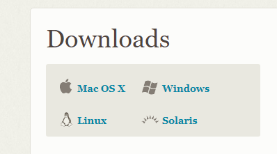
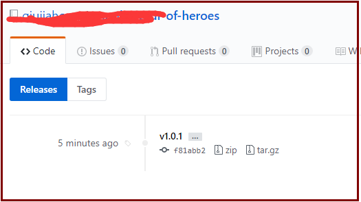

git与gitbook {ignore=true}
前言
git：版本管理工具，可以和github配合使用；
gitbook：电子书生成工具；
calibre：PDF格式电子书转换需要；
本文介绍上面三个软件的安装和使用,假设读者电脑已经安装好了node，如果没有安装好node，请参考【node安装】
安装软件
- 官网下载安装。如果是在windows下安装，请选择安装LINUX命令，这将对你以后的研发很有帮助。 
- 安装gitbook
cnpm install gitbook - 安装calibre 到官网下载安装；
常用命令
git命令
| 命令 | 说明 |
|---|---|
| git init | 初始化仓库 |
| git add . | 添加新文件或者更改新文件 |
| git add filename | 添加一个文件 |
| git commit -m "comment" | 提交文件到本地 |
| git remote | 列出已经存在的远程分支 |
| git remote remove |
删除远程分支 |
| git clone https://url/testTitle.git | 克隆到本地 |
| git fetch branch2 | 更新信息 |
| git merge branch2/master | merge本地信息 |
| git remove ** | 删除文件 |
| git push | push到服务器上 |
| git pull origin master | 从服务器上拉取信息 |
| git branch -a | 查看所有分支 |
| git branch -r | 查看远程分支 |
| git branch -d * | 删除分支 |
| git branch * | 新建分支 |
| git checkout * | 切换分支 |
| git status | 查看状态 |
| git log | 查看提交修改记录 |
gitbook命令
| 命令 | 说明 |
|---|---|
| gitbook init | 初始化 |
| gitbook build | 生成HTML |
| gitbook serve | 打开浏览器服务 |
| gitbook pdf | 生成PDF |
常用组合操作
从命令行创建一个新的仓库
touch README.md git init git add README.md git commit -m "first commit" git remote add origin https://try.gogs.io/****/test.git git push -u origin master
从命令行推送已经创建的仓库
git remote add origin https://try.gogs.io/****/test.git git push -u origin master
发布版本
- 查看tag
git tag 新建tag
git tag [tagname] -m "[comment]"
git tag v1.0.1 -m "发布1.0.1版本"提交tag
git push origin [tagname]
git push origin v1.0.1
效果演示： 